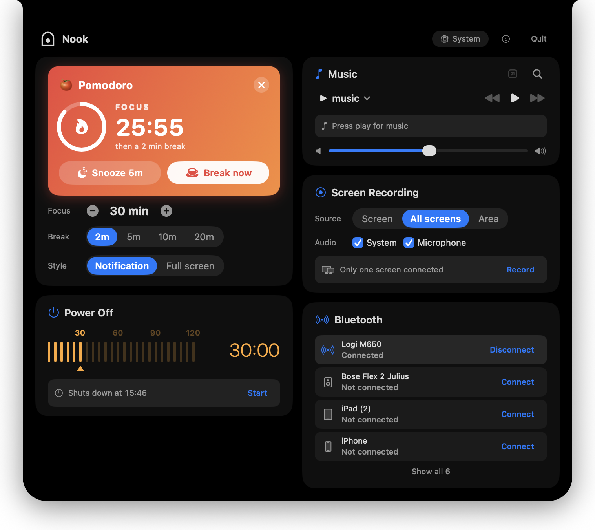
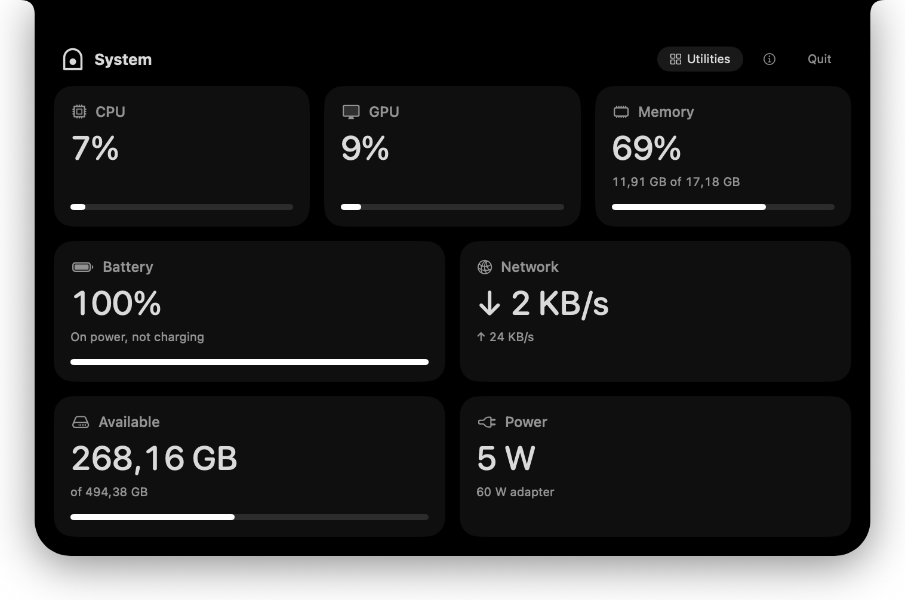
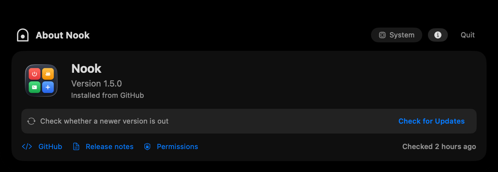

Your Mac's notch, put to work
Click Nook in the menu bar and it drops down from the notch with a Pomodoro timer, a shutdown timer, background music, screen recording, your Bluetooth devices and your Mac's vitals. Press Esc and it's gone.
brew install --cask cs-tungthanh/tap/nook
For Apple silicon Macs with macOS 13 or later. Installs with Homebrew and updates itself.

Always one click away
Nook stays out of the way until you need it, then folds back into the notch.
Install it once
Run one Homebrew command. Nook adds a small icon to your menu bar and nothing to your Dock.
Click the icon
The island drops from the notch, like the Dynamic Island, with every tool on one page.
Get back to work
Click anywhere else or press Esc. Timers and music keep running in the background.
Small tools you reach for every day
Six utilities that used to mean six apps, sharing one tidy panel.
Pomodoro
Focus for 20, 25, 50 minutes or your own length, with a live countdown ring, then a break as a notification or a full-screen overlay. Pauses while your Mac sleeps.
Power Off
Drag along a ruler to shut your Mac down in 5 minutes to 2 hours. A countdown sits in the island; cancel in one click.
Music
Study, sleep, focus and jazz streams from YouTube on a card with the video's artwork. Search, play your playlists, and let it pick back up once your Mac goes quiet.
Screen Recording
One screen, all screens or an area, with system audio and your mic. Pause, resume and save as a movie file.
Bluetooth
Your paired devices with battery levels, AirPods left, right and case included. Connect or disconnect in one click.
System
CPU, GPU, memory, battery, network, disk space and power draw. Measured only while the page is open.
Your Mac's vitals at a glance
Press System in the island's header to see how hard your Mac is working, then switch back to your tools.
- CPU, GPU and memory with meters that turn orange above 85%.
- Battery and power: charge, charging state, the watts your Mac draws and the adapter's rating.
- Network and disk: live download and upload speed, and the space you have left.


Always up to date
Nook checks for new versions on its own. When one is out, an Update button appears in the island.
- One click: Update & Relaunch installs the new version and reopens Nook.
- Verified: every download is checked against the checksum published on GitHub.
- Homebrew-aware: if you installed with Homebrew, Nook updates through it, so
brewstays in sync.
Light, local and open
Nook is a single native app. It doesn't need an account, and it doesn't send anything about you anywhere.
- No account, no trackingThere are no analytics. Nook only goes online for music and YouTube, and to check GitHub for updates.
- Your YouTube stays read-onlyConnecting your account is optional. Nook only reads your playlists, and the sign-in is kept in your Keychain.
- Permissions in plain sightAbout › Permissions lists everything Nook may use, whether it's allowed, and a button to allow it or open System Settings.
- Easy on your MacSystem stats are measured only while you're looking at them, and the island's content is unloaded while it's closed.
- Open sourceEvery line is on GitHub, so you can read it or build it yourself.
Make room for Nook
Free for Apple silicon Macs with macOS 13 or later. One command installs it; after that it keeps itself up to date.
brew install --cask cs-tungthanh/tap/nook